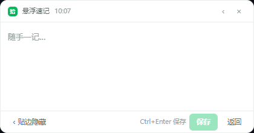

本地优先数据存在你自己的电脑里，离线可用
云同步可选登录后多机自动同步，存于你自己的云环境
免费开源代码托管在 Gitee，可审计可自建
轻量干净无广告、无订阅、无后台驻留骚扰
FEATURES
记笔记这件事，
快一点，安静一点。

灵感不等人，速记窗也不等
无论在做什么，按下快捷键就能记录。悬浮窗平时收成屏幕边缘的一颗小球，鼠标一碰就展开。
- 全局快捷键 Ctrl+Shift+N 唤出 / 收起
- 悬浮窗贴边自动收成小球，不挡视线
- 写完即存，进主窗口继续整理
多台电脑，一份笔记
v1.2.0 带来云同步：邮箱注册登录后，笔记在你的 Windows 设备之间自动合并。改动按时间戳逐条对齐，删过的内容不会"复活"。
- 不登录：纯本地使用，功能一个不少
- 登录后：编辑、切回窗口、退出软件时自动同步
- 多账号严格隔离；数据存于你自己的云环境
01Markdown 三栏
标签栏、列表、编辑器一屏呈现，实时预览，宽度和布局随手可调。
02标签与筛选
多标签归类，加上今天 / 本周 / 本月 / 自定义的时间筛选，找笔记不费劲。
03提醒与重复
给笔记定个时间，到点弹窗提醒；支持按周期重复。
04回收站
删错了不怕，回收站里一键还原；彻底删除也有二次确认。
05每日自动备份
每天首次启动自动备份数据库，滚动保留最近 7 份。
06主题与专注
明暗主题跟随系统，三种强调色；专注模式隐藏侧栏只留文字。
FAQ
常见问题
我的数据存在哪里？
默认只存在你电脑的本地数据库里（userData 目录），不上传任何服务器。登录并开启云同步后，快照会存到你自己的 CloudBase 云环境中，本地仍然保留完整副本。
收费吗？
应用本身完全免费、开源。云同步基于 CloudBase 免费额度，个人笔记场景足够使用；不登录则完全不产生任何云端流量。
断网的时候能用吗？
能。写作、搜索、提醒、备份全部离线可用；联网后改动会自动补同步。软件退出时也会把没传完的改动自动同步上云。
多台电脑同时改同一条笔记会怎样？
按每条笔记的最后修改时间逐条合并，新的覆盖旧的。本地彻底删除的笔记通过墓碑机制同步删除，不会在另一台电脑上"复活"。
支持哪些系统？会有 macOS / Linux 版吗？
目前提供 Windows 10 / 11（64 位）安装版与便携版。项目基于 Electron，理论上可构建其他平台版本，欢迎到 Gitee 提 Issue 或参与贡献。